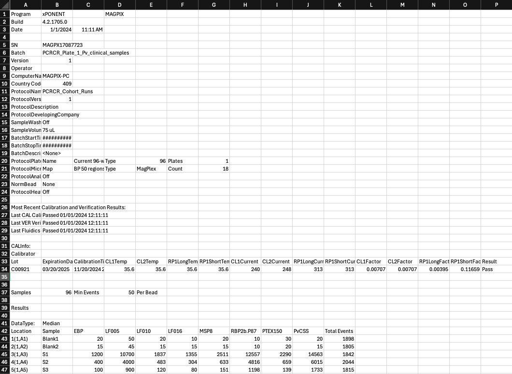
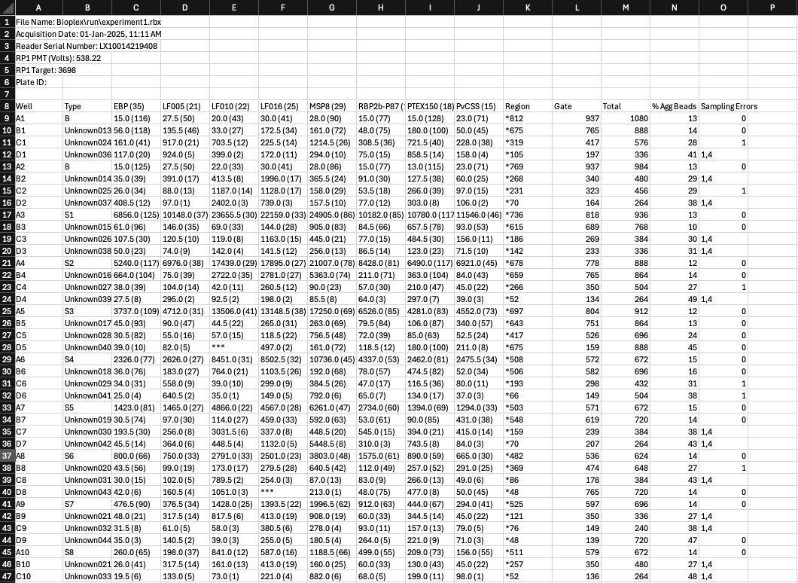
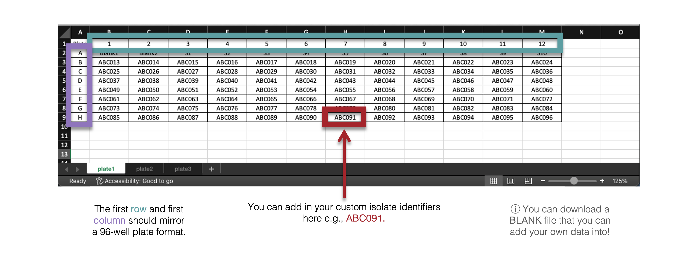

File Name Convention
The following files are required for this app. You might like to organise your folder as follows:
my_R_project
└── raw_data_files/
├── raw_MAGPIX_data/
│ ├── raw_data_plate1.csv
│ ├── raw_data_plate2.csv
│ └── raw_data_plate3.csv
├── raw_BioPlex_data/
│ ├── raw_data_plate4.xlsx
│ ├── raw_data_plate5.xlsx
│ └── raw_data_plate6.xlsx
├── platelayout.xlsx
└── outputs/Raw Data Files
The raw data files should all contain
“plate1”, “plate2”, “plate3”, etc., in the file name. Ensure there are
no special characters or spaces between the “plate” and number. To keep
things simple, please also do not write any leading 0’s before the
number e.g., do not write “plate01”.
For the MAGPIX and Intelliflex Machines:
You can pre-program the MAGPIX machine so that you can export all the raw data directly from the machine once the plate reading is completed. There is no need to edit the raw data file that comes from the MAGPIX.
Within your plate layout in the MAGPIX, you can use the “U” button for all unknown samples, “B” button for Background or Blank samples, and “S” for Standard Curve samples. For the control wells, please feel free to edit these labels so that the ID is just “B”, “S1”, “S2”, “S3”….”S10”.
You can also write in the Operator i.e., who ran the assay! This is useful to track variation in plates between experiments.

For the Bioplex Machines:
Isolate names will tend to be written as ‘X1’, ‘X2’, ‘X3’… and saved as an .xlsx file. Specifics on Bio-Plex machines will be added shortly.

Plate Layout File
The plate layout file should contain
all of the plate layouts in each tab. For each 96-well
plate that you run on the Luminex machine, prepare a plate layout that
includes the sample labels that will match your raw data. The
application will match the raw data to the corresponding sample based on
the plate layout that you import.
Make sure that your sample labels in the plate layout are as follows:
- Standards: Labels start with “S” and then a number as required (e.g. S1, S2, S3 or Standard1, Standard2, Standard3).
- Blanks: Labels start with “B” and then a number as required if there is more than one blank sample (.e.g ‘B1’, ‘B2’, or ‘Blank 1’, ‘Blank2’ etc).
- Unknown Samples: Label your unknown samples according to your specific sample codes (e.g. ABC001, ABC002).
The package expects standards to start with “S” and blanks to start with “B”, but everything else with a label will be considered an unknown sample. If you have other types of samples, for example a positive control, you can use a different sample label to the other unknown study samples (i.e. “PositiveControl” in addition to the “ABC” study codes).

The standards S1-10 correspond to the following dilution concentrations:
| S1 | S2 | S3 | S4 | S5 | S6 | S7 | S8 | S9 | S10 |
|---|---|---|---|---|---|---|---|---|---|
| 1/50 | 1/100 | 1/200 | 1/400 | 1/800 | 1/1600 | 1/3200 | 1/6400 | 1/12800 | 1/25600 |
The standards S1-5 correspond to the following dilution concentrations:
| S1 | S2 | S3 | S4 | S5 |
|---|---|---|---|---|
| 1/50 | 1/250 | 1/1250 | 1/6250 | 1/31250 |